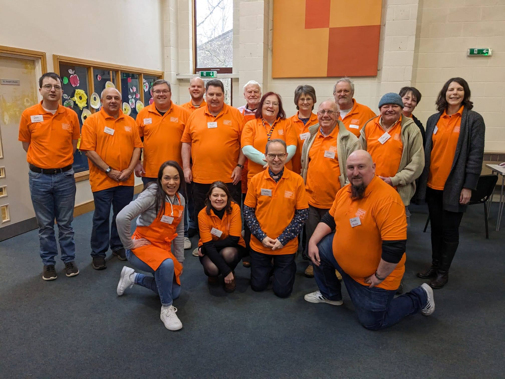
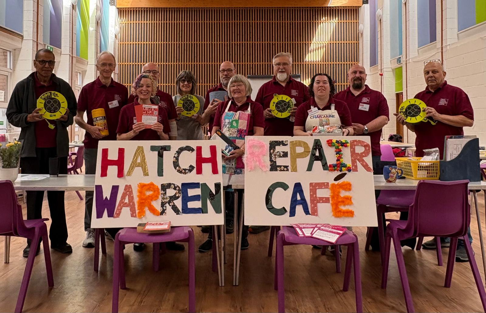
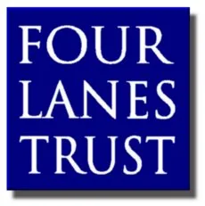
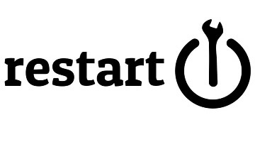
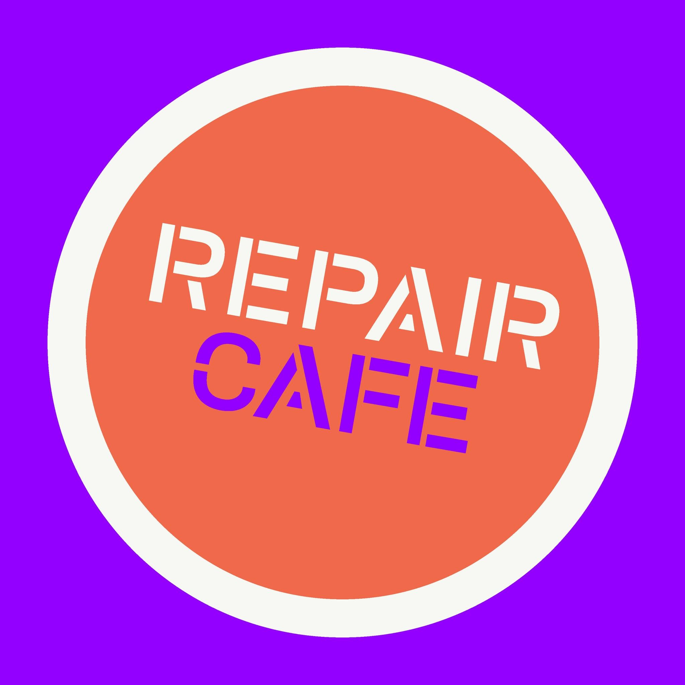
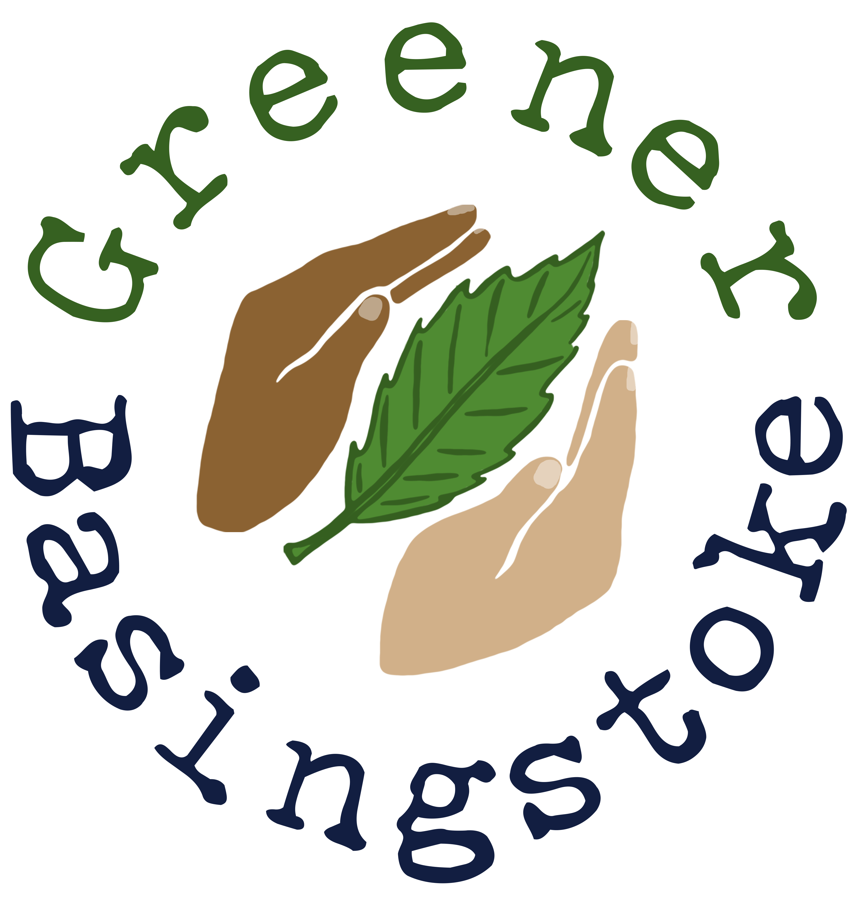

What is a Repair Café?
Repair Cafés are free community events where people bring broken items and work alongside skilled volunteers to fix them. Instead of throwing away that broken toaster, torn jacket, or wobbly chair, bring it to a Repair Café and give it a new lease of life!
Our mission is simple: reduce waste, save money, learn new skills, and build community connections. Every item repaired is one less in the landfill and one step toward a more sustainable future.
The Basingstoke Repair Network is part of a global movement with over 4,500 repair cafés worldwide. We're expanding across Basingstoke and North Hampshire, bringing the power of repair to more communities.
Why Repair Matters
Reduce Waste
Keep items out of landfills and reduce environmental impact
Build Community
Connect with neighbors and share skills
Learn Skills
Discover how things work and gain repair confidence
Our Locations

Chineham Repair Café
When: 3rd Saturday of each month, 10am-1pm
Where: Christ Church Chineham, Reading Road (next to Surgery), RG24 8LT
Our flagship repair café has been serving the Chineham community with expert volunteers ready to help fix electrical items, textiles, bikes, and more!

Hatch Warren & Beggarwood Repair Café
When: 1st Saturday of each month, 10:30am-1pm
Where: Hatch Warren Community Centre, RG22 4XF
Bringing repair expertise to the Hatch Warren and Beggarwood communities. Join us for free repairs and a warm welcome!
Kings Furlong Repair Café
Coming Later in 2025
We're excited to announce that a new repair café will be opening in Kings Furlong later this year. Stay tuned for updates on dates and location!
Other Local Repair Cafés
Part of the North Hampshire Repair Network, connecting communities across the region.
For information about other repair cafés in North Hampshire, please visit the North Hampshire Repair Network
Get Involved
We Need You!
Whether you're a skilled repairer or just want to help out, we'd love to have you join our team. We're looking for:
Repair Volunteers
- Electrical repairs
- Textile & sewing
- Bicycle repairs
- Carpentry & furniture
- Any other repair skills!
Support Volunteers
- Welcome & registration
- Refreshments
- Setup & cleanup
- Social media
- Event coordination
Contact Us
Our Supporters
We're grateful for the support of these organizations helping us build a sustainable community

Four Lanes Trust
Restarters.net

Repair Café Int\'l
Greener Basingstoke